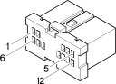

B1G Junction unit ( FACIA )
- Path
- Electrical equipment > Connectors > B Various fuse holders and valves > B1 Junction unit > B1G Junction unit ( FACIA )
- Kind
- connector pinout (pin -> wire colour -> other end)
- Applies to
- engines: 1.6 TS , 1.8 TS, 2.0 JTS, 2.5 V6, 3.2 V6, 1.9 JTD 8v , 1.9 JTD 16v, 2.0 JTS, 2.4 JTD 10v, 2.4 JTD 20v; production: da 03/02 a 09/03, da 10/03
- Interactive page
- https://sloeber94.github.io/elrnDB-a156/en/#/3235162
Applies to: engines: 1.6 TS , 1.8 TS, 2.0 JTS, 2.5 V6, 3.2 V6, 1.9 JTD 8v , 1.9 JTD 16v, 2.0 JTS, 2.4 JTD 10v, 2.4 JTD 20v; production: da 03/02 a 09/03, da 10/03

Wiring | Colour |
|---|---|
BIANCO (white) |
Topics linked from this page (2)
Topics that link to this page (28)
- D20B /Rear dashboard coupling ( FACIA )
- D20B /Rear dashboard coupling ( FACIA )
- D20B /Rear dashboard coupling ( FACIA )
- D40 Boot / rear coupling ( REAR )
- D75 Radio phone junction ( REAR )
- D75 Radio phone junction ( REAR )
- D75 Radio phone junction ( REAR )
- D75 Radio phone junction ( REAR )
- D87 Left tailgate / rear coupling ( REAR )
- D88 Right /tailgate rear coupling ( REAR )
- F30 Rear left light cluster ( REAR )
- F30 Rear left light cluster ( REAR )
- F30 Rear left light cluster ( REAR )
- G10 Front courtesy light ( REAR )
- G20 Rear (centre courtesy light) ( REAR )
- G20 Rear (centre courtesy light) ( REAR )
- G25 Rear left courtesy light ( REAR )
- G26 Rear right courtesy light ( REAR )
- M35 Alarm remote control receiver ( REAR )
- M35 Alarm remote control receiver ( REAR )
- M35 Alarm remote control receiver ( REAR )
- M40B Integrated services control unit ( REAR )
- M40B Integrated services control unit ( REAR )
- M40B Integrated services control unit ( REAR )
- M40B Integrated services control unit ( REAR )
- M40B Integrated services control unit ( REAR )
- M40B Integrated services control unit ( REAR )
- P92 Subwoofer ( REAR )